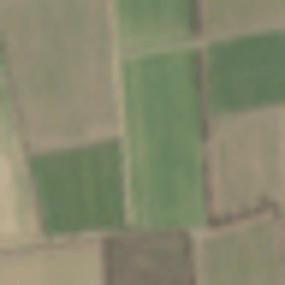
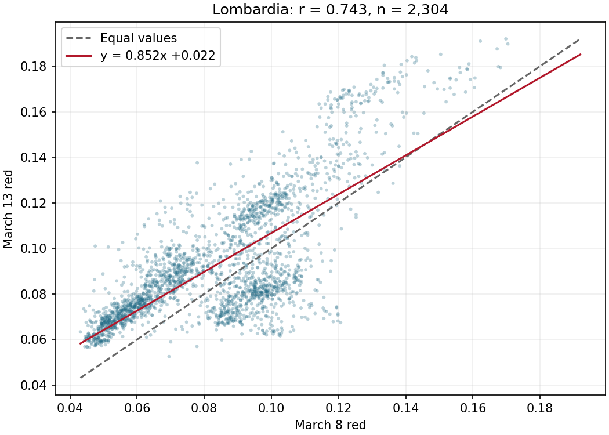

Compare bitemporal images, distinguish spectral change from acquisition effects, and interpret difference maps and change-vector magnitude.
One Sentinel-2 agricultural patch on twelve dates in 2019. The notebook downloads tiny individual GeoTIFFs anonymously from the CC0 source dataset. Inspect RGB images for cloud and atmospheric effects alongside agricultural variation.
Open the Lombardia demonstration for the notebook, Colab link, downloads, and rendered slides.
View the slideshow or download the lecture PDF.


Source data: Gallo et al., Sentinel-2 Image Time Series for Crop Mapping (CC0)